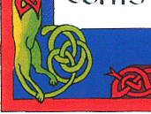
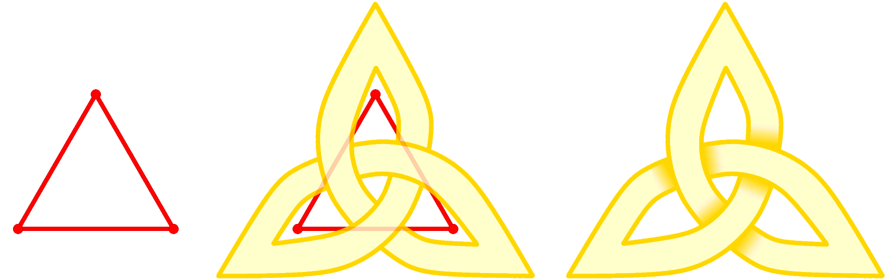

Celtic Knotwork: the Ultimate Tutorial

Celtic Knotwork: the Ultimate Tutorial |
|
Please choose the English, the French or the German version. PDF poster (660Kb). The whole site .tar.gz (3Mb).
Cours de dessins d'entrelacs | 
|
|  |
En moins d'une heure vous apprendrez à dessiner de beaux entrelacs, à
la manière celte ou arabe, comme ceux des bibles ou des corans
enluminés, par exemple le livre de Kells, ou les tatouages "tribaux".
Prière de choisir la version française, anglaise ou allemande. Poster en PDF (643Ko). Le site entier .tar.gz (3Mo). |
Keltisch Knoten: die ultimative Anleitung |
|  | In weniger als einer Stunde werden Sie erlernen, wie man Knoten, in der keltischen oder arabischen Weise, wie denen in belichteten Bibeln oder in Kurants wie dem Buch von Kells oder von netten Stammes-Tatoos zeichnet.
Bitte wählen Sie die deutsche, englisch oder französische Version. |
Christian Mercat Curriculum vitae
Signez la pétition de Médecins sans frontieères.